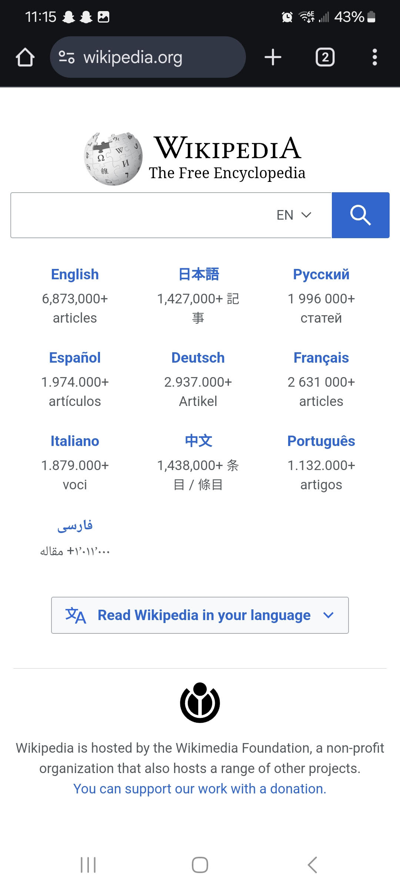
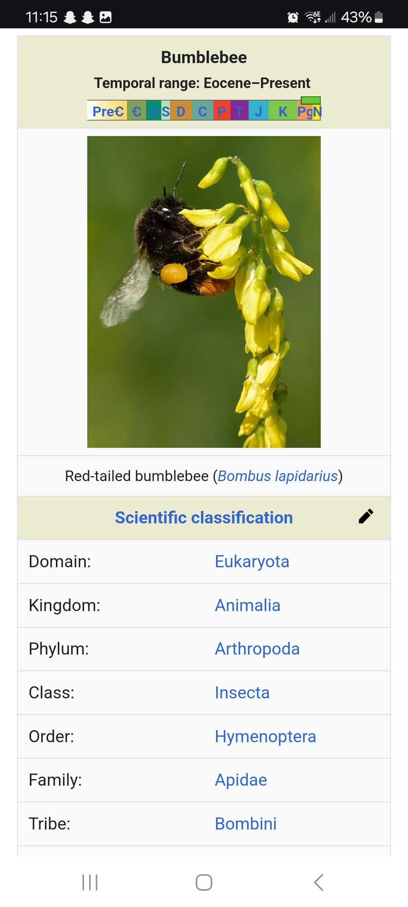
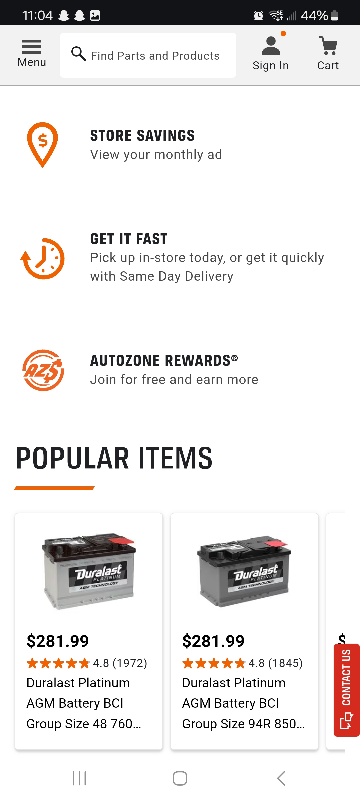

Visual Hierarchy
SquareSpace
squarespace.com
SquareSpace's website illustrates the property of Visual Hierarchy by drawing your immediate attention to the words 'A website makes it real', a hint towards the website's purpose of helping people create their own websites. Your eyes are then led down to the words right beneath it, drawing you as the customer in to try them out and experience the website.
Repetition
Wikipedia
wikipedia.org
 The website Wikipedia is a great example of the principle of Repetition in action. Wikipedia's article pages are always cleanly laid out the same way in the same uniform fashion, making it easy to understand and navigate for all users.
White Space and Clean Design
AutoZone
autozone.com
This home page for AutoZone is a good demonstration of proper use of white space and clean design. The areas in between information are nicely spaced out and the things they want you to draw your eyes toward are clearly presented and distinct from the white area.